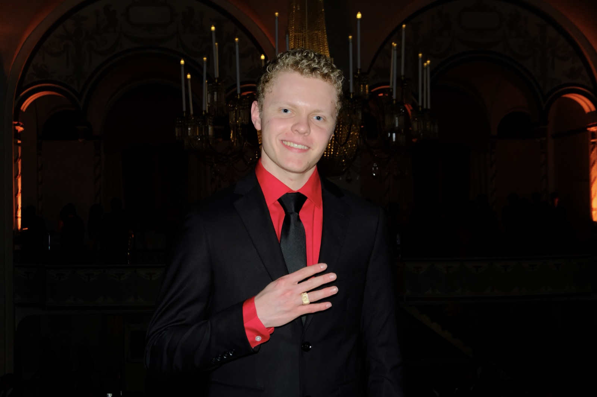

Aerospace engineer, lifelong maker.

I'm an Aerospace Engineering student at MIT (Class of 2028). My path started with taking apart a 3D printer to see what made it tick — twenty-one upgrades later, I still haven't stopped. Since then it's grown into rockets, robotics, and embedded systems: leading FRC Team 2847 Megahertz to a state championship and Worlds qualification, building a vision-guided sun-tracking payload from scratch, and now building autonomous rovers at Skyrun AI, modeling hypersonic reentry plasma in MIT's Hypersonics Research Lab, working liquid propulsion on the MIT Rocket Team, and captaining RI3D@MIT.
Path so far
MIT Hypersonics Research Lab — Hypersonics Researcher
Predicting electron density and radio-communication blackout around the OREX spacecraft with US3D CFD; reconstructed the vehicle geometry from NASA/JAXA drawings and building a structured axisymmetric grid in Pointwise.
HackMIT — Stratospheric Balloon (24-Hour Hackathon)
Designed, built, launched, and recovered a Jetson-carrying balloon payload in 24 hours, relaying LLM prompts over a custom Yagi antenna, and recovered it within a 10-minute drive of MIT.
UEFC Flight Competition — 5th Place Overall
Sized, analyzed, built, and flew a competition RC airplane with a 4-person team ("The Millennium Falcons"), trading off flight speed against payload CG range under hard design constraints.
JetJoe Turbojet Lab — Model vs. Test
Built a Brayton-cycle model for a JJ-1400 turbojet engine, then assembled and live-fired the real engine to compare against measured thrust, mass flow, and turbine temperatures.
16.632B — Star Trek Adventure, 2nd Place ($125 Prize)
Designed, built, and programmed an autonomous rover for a head-to-head gameboard competition in MIT's Introduction to Autonomous Machines II.
Skyrun AI — Robotics Engineering Intern → Contract Engineer
Designed and built 2 autonomous rovers from scratch, owning mechanical, electrical, compute, sensor, and autonomy integration; built the sim-to-real infrastructure that transfers 6 autonomous behaviors across platforms and simulation.
RI3D@MIT (FIRSTxMIT) — Head Captain
Head Captain of MIT's first Robot in 3 Days, leading the captain team and ~25 students through rapid CAD, design reviews, and software development to a fully functional robot within 72 hours of kickoff.
MIT Rocket Team — Liquid Propulsion (formerly Solid Propulsion & Executive IT Chair)
FEA of a filament-wound CFRP motor case in Ansys/ACP; machined hardware, cast solid propellant, and designed grain geometry for SRAD test flights.
MIT Media Lab, Space Enabled — Zero Robotics Researcher
Tested Astrobee with NASA Ames toward ISS deployment; instructed and served as MC for the 2025 competition finals.
AGCO — Embedded Software Engineering Intern
Led UI and CAN signal routing for an integrated weather station system on sprayer platforms; delivered up to 200x faster runtimes across optimization projects.
NASA Space Grant Consortium — Research Intern, University of Minnesota
Built a 360° vision-guided sun-tracking payload and programmed microcontrollers for stratospheric data collection.
FRC Team 2847 Megahertz — Captain, Programming Lead, Driver
Led the team to its first state berth, a Minnesota State Championship, and a FIRST Robotics World Championship qualification.
National History Day — 1st in Minnesota, 4th Nationally
"Breaking Barriers of Space: Apollo 11" — Junior Exhibit Category.
Gingerbread AT-AT
Dough, icing, and every panel made from scratch — a full 3D Star Wars AT-AT walker, standing on its own gingerbread legs.
Independent builds
21-and-counting upgrades to a 3D printer; a 360° sun-tracking payload system.